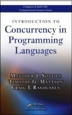
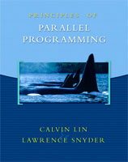
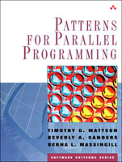
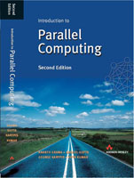
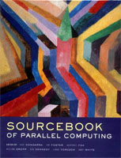
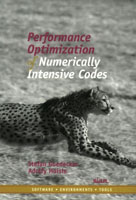
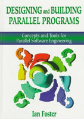
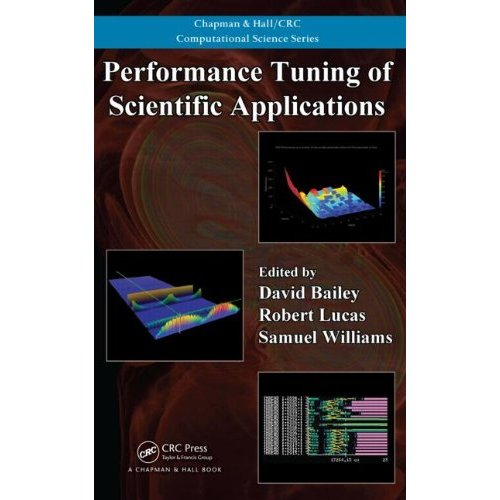

Resources for CS 267, Spring 2013
Previous Class Pages
2012 |
2011 |
2010 |
2009 |
2008 |
2007 |
2006 |
2005 |
2002 |
2001 |
1999 |
1997 |
1996
Previous Final Projects
2012 |
2010 |
2009 |
2006 suggestions |
2002 suggestions |
1997 |
1996,
1996 suggestions |
1995 |
1994 |
1993








- G. Hager and G. Wellein 2010. Introduction to High Performance Computing for Scientists and Engineers, CRC Press.
- M. Sottile, T.G. Mattson, and C.E. Rasmussen 2009. Introduction to Concurrency in Programming Languages, Chapman & Hall/CRC Computational Science.
- Lin, C., and Snyder, L. 2008. Principles of Parallel Programming, Addison Wesley.
- Mattson, T. G., Sanders, B. A., and Massingill, B. L. 2004. Patterns for Parallel Programming, Addison Wesley.
- Grama, A., Gupta, A., Karypis, G., and Kumar, V. 2003. Introduction to Parallel Computing, Second Edition, Addison Wesley.
- Dongarra, J., et al. 2002. The Sourcebook of Parallel Computing, Morgan Kaufmann.
- Goedecker, S., and Hoisie, A. 2001. Performance Optimization of Numerically Intensive Codes, Society for Industrial Mathematics.
- Foster, I. 1995. Designing and Building Parallel Programs, Addison Wesley, also available online.
We also recommend these relevant papers.
Obtaining a NERSC account
To access the NERSC machines, follow these steps:
- Fill out the class survey.
- Sign and return the NERSC Computer Use Policies form to the GSIs. We will distribute these on the first day of class. When filling out the form, use the following information:
- Organization
- The university you attend (eg, UC Berkeley)
- NERSC principal investigator
- Kathy Yelick
- Repo name
- mp309
- NERSC will contact you with your username and temporary password.
Assignments
[ Back to the Course Page ]